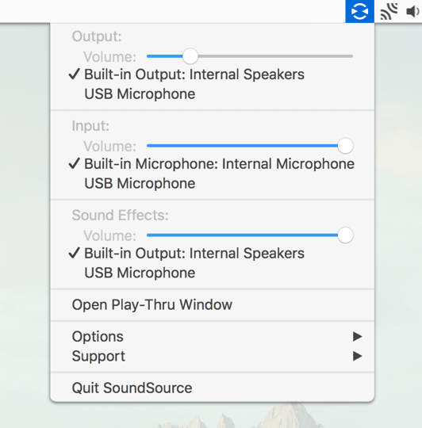
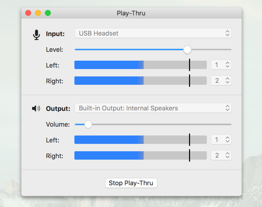

Always in the Menu Bar
SoundSource lives in your menu bar, so your audio device settings are always available, no matter what application you're using.

Fast Device Control
Set Input, Output, and Sound Effects devices right from SoundSource's menu bar icon, and adjust their volume levels too.

Audio Play-Thru, Too
Use the Play-Thru window to monitor audio coming into your Mac from any audio input.
